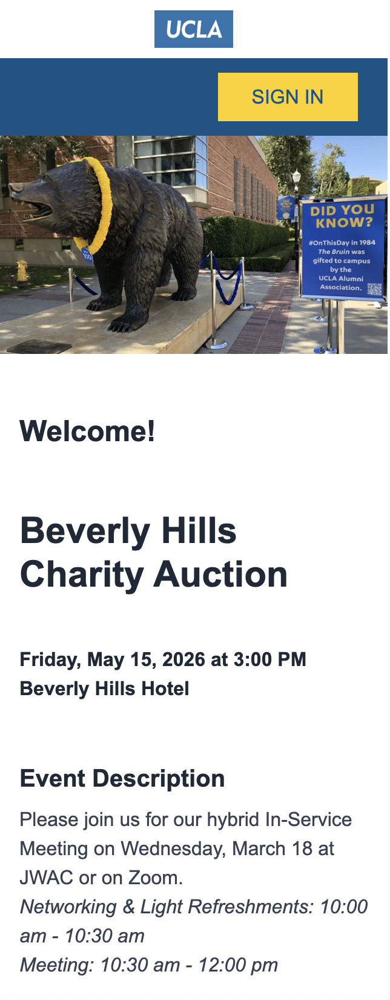
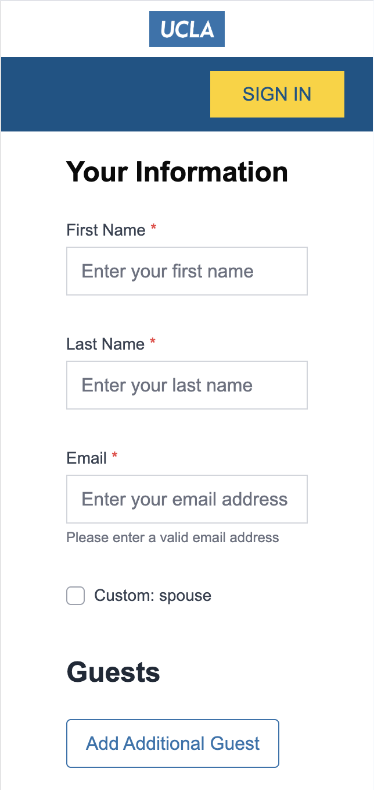

UCLA Events RSVP Platform
Transforming a 2-week developer process into a self-service platform that event staff can launch in hours
Overview
The existing UCLA event registration system ran on a legacy PowerBuilder platform — outdated, not mobile-friendly, and requiring developers to manually configure every new event site. With turnaround times of up to 2 weeks per request, the process consumed significant developer resources and frustrated event staff who needed to move fast.
UCLA events are critical — they serve major donors, alumni, parents, former athletes, students, and community members — and third-party platforms couldn't meet UCLA's unique data integration and privacy requirements.
The Problem
- Legacy PowerBuilder system with outdated UI and zero mobile support
- Every new event required developer configuration — no self-service capability
- 2-week turnaround time for each event site request
- Developer resources were tied up on event requests instead of new projects
- Third-party platforms couldn't integrate with UCLA's private CRM and donor data
- Events had highly complex requirements: invitee-only sites, special pricing tiers, sub-events, activities within events, capacity limits, ticket time windows, and spouse/guest data management
My Role
Sole Product Designer and UX Designer on the project. Collaborated closely with the project manager, conducted user interviews with key internal clients, and led requirements gathering sessions. Delivered user journeys, roadmaps, technical diagrams, wireframes, high-fidelity comps, and led user acceptance testing. Worked directly with full-stack developers and external vendors throughout the build.
Users
Two distinct user groups shaped the design direction:
Front-end (UCLA Constituents): Students, staff, faculty, wealthy donors, alumni, former athletes, parents, and family members. The experience needed to be fast, intuitive, and mobile-friendly for a wide range of technical abilities.
Admin side (UCLA Event Staff): Previously had to coordinate with in-house developers for every transaction, report, refund, and configuration change. The goal was to make them fully self-sufficient.
Key Design Decisions
The central tension of the project was balancing the complexity of UCLA's event requirements with the simplicity needed for a self-service admin tool. Edge cases were numerous and difficult to design for — linking guest lists to special price tickets, managing spouse and guest data entry, configuring invitee-only access, and handling capacity scenarios across sub-events.
For the constituent-facing flow, the priority was speed and simplicity — capturing all required data without friction, optimized for mobile.
Key Screens


Platform Screenshots




What Shipped
A fully integrated, modern, mobile-friendly event registration platform that connects directly with UCLA's CRM, donor portals, and private data systems. UCLA Event Staff can now create and launch a complete event site independently in a matter of hours. Constituents experience a clean, intuitive registration flow from any device.
Results
- Event site turnaround time reduced from 2 weeks to a few hours
- Platform is fully self-service — no developer involvement required for new events
- Developer resources freed up for higher-priority new product work
- Event staff gained full autonomy over their event management
- UCLA constituents now experience a modern, mobile-friendly registration flow
What I'd Do Differently
"This project grew significantly more complex the deeper we got into it. If I could do it again, I would invest more time upfront interviewing admin users to surface edge cases earlier in the process — before they became design and development challenges mid-build."